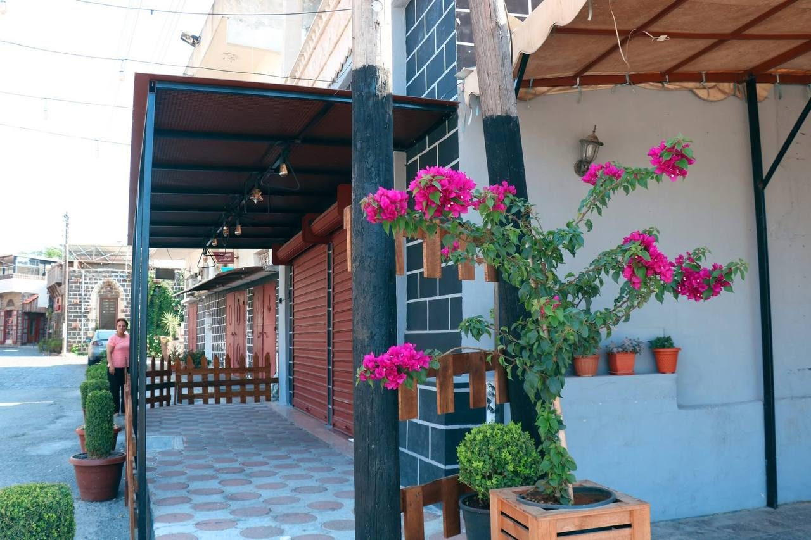
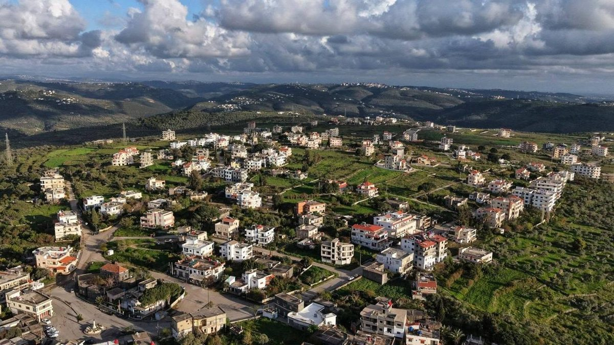
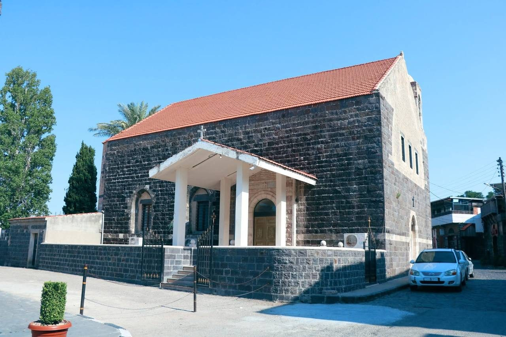
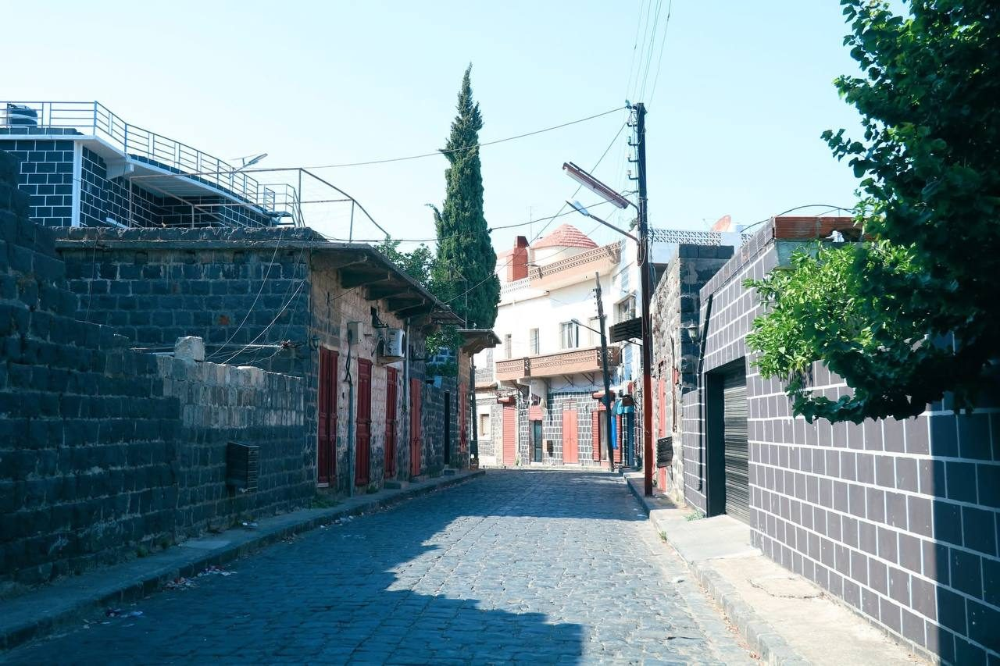
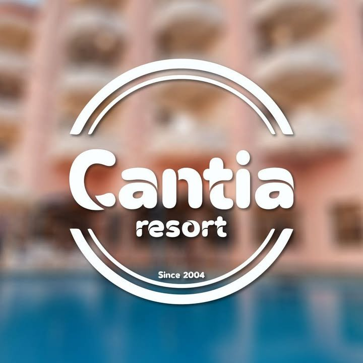

🏪
سوق السودا القديم
المعلم الأول
سوقٌ مرصوفٌ بالحجارةِ السوداء يحافظ على طابعه التراثي بواجهاتِه الخشبية، وما زال نابضاً بالحياة يؤمّن حاجيّات الأهالي.
بلدةٌ تطلّ على البحر من الغرب والجبال من الشرق، تتربّع فوق فوهةِ بركانٍ خامد، وتزيّن أزقّتها أحجارٌ بازلتيةٌ سوداء.
السودا بلدةٌ ومركزُ ناحيةٍ على بُعد 15 كيلومتراً شمال شرق طرطوس. تقع على سفحِ جبلٍ يطلّ على الجهات الأربع، فتُطلّ على البحرِ المتوسط من الغرب والجبالِ من الشرق، وتشكّل البوابةَ الطبيعيةَ نحو الداخلِ السوري عبر طريقِ طرطوس–وادي العيون–مصياف.
تعود نشأةُ البلدةِ إلى نحو ثلاثةِ قرونٍ ونصف، وتتوسّط فوهةَ بركانٍ خامد، منحها تربةً خصبةً وطبيعةً متميّزةً عن القرى المحيطة.

سوقٌ قديمٌ مرصوفٌ بالحجارة السوداء، وكنيسةٌ من أقدم كنائس سوريا، وأزقّةٌ حافظت على طابعها التراثي حيّاً حتى اليوم.

سوقٌ مرصوفٌ بالحجارةِ السوداء يحافظ على طابعه التراثي بواجهاتِه الخشبية، وما زال نابضاً بالحياة يؤمّن حاجيّات الأهالي.

أصلُها يعود إلى القرن الثالث الميلادي، بمعمارٍ يجمع أنماطاً متعدّدة، ويُحتفل بعيدها في 15 آب من كل عام.

أبوابٌ خشبيةٌ حمراء وأزقّةٌ متشابكةٌ وبيوتٌ من الحجرِ الأسود — أرشيفٌ حيّ لذاكرةِ المجتمع.
سميتِ البلدةُ نسبةً إلى الأحجارِ البازلتيةِ السوداء التي بُنيَت منها أغلبُ مبانيها، والتي اشتهرت بها منذ قرون.
على بعد ربع ساعةٍ من طرطوس، تنتظرك استراحاتٌ ومقاهٍ ومطاعمُ في قلبِ البلدة.

منتجعٌ يستقبل الحجوزات للمناسبات والحفلات، وجهةٌ مريحة للإقامة قرب الطبيعة.
📞 0932 646 032يشتهر بأطباقِ الفخارِ واللحومِ بنكهةٍ أصيلةٍ، من أبرز وجهاتِ الأكل في البلدة.
📞 0944 525 080 · 043 410 4651مقاهٍ في قلبِ البلدة، مكانٌ مثاليٌّ للاسترخاءِ وسطَ أجواءِ القريةِ الهادئة.
أزقّةٌ بازلتيةٌ، سوقٌ عريق، كنيسةٌ أثرية، وطبيعةٌ تتدرّج بين البحرِ والجبل.
جولةٌ حقيقيةٌ في أزقّة البلدة — الحجر الأسود، زهور الجهنمية، والكنيسة العريقة.